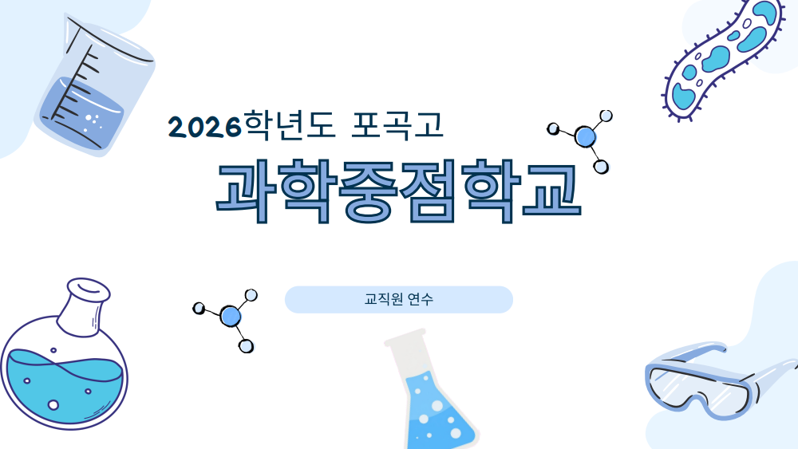

과학 10학점 이상
통합과학 8학점과 과학탐구실험 2학점을 포함합니다. 수학은 8학점 이상을 편성합니다.
1학년 과목 선택부터 3학년 연구 발표까지, 학생 상담에 필요한 기준과 일정을 확인하세요.

2026학년도 입학생부터 적용합니다. 학교 운영 기간은 2026년 3월 1일부터 2031년 2월 28일까지입니다.
통합과학 8학점과 과학탐구실험 2학점을 포함합니다. 수학은 8학점 이상을 편성합니다.
교육과정 연계 15시간과 개인 참여 15시간 이상을 구분합니다.
과학·수학·정보에서 전체 교과 174학점의 45% 이상을 이수합니다. 포곡고 편성 예시는 80학점입니다.
1학년 상담 때 과학 일반선택 4과목과 과학 진로선택 6과목 이상을 충족할 수 있는지 함께 확인합니다.
물리학·화학·생명과학을 모두 선택합니다.
지구과학과 함께 역학과 에너지, 물질과 에너지, 세포와 물질대사 중 두 과목을 선택합니다.
1학기 융합과학탐구에서 발표와 연구 결과물을 준비하고, 2학기까지 과학 진로선택 누계 6과목 이상인지 확인합니다.
온라인 과목 선택 기간과 최종 확정 후 서류 제출 기간은 다릅니다.
1학년에는 관심 분야를 찾고, 2·3학년에는 연구 결과를 보고서와 발표로 발전시킵니다.
비교과 체험활동에 15시간 이상 참여합니다.
비교과 활동 3개 이상 참여, 사이잇다 부스 운영, 과제연구 보고서 작성이 필요합니다.
희망 분야 연구진 소개, 전문가 인터뷰 발표, 수학·과학 독서 발표 1편 이상, 과학페임랩 1회 이상에 참여합니다.
제출 기한은 학교 프로그램과 교외 개인활동을 나누어 확인하세요.
e알리미로 신청합니다. 활동 후 담당교사가 소감문을 확인하고, 학생은 7일 이내에 학교 홈페이지의 비교과 체험활동 사이트에 결과물 또는 소감문을 올립니다.
원문 보기 · 8쪽 ↗활동 2일 전까지 신청하고 허가를 받은 뒤 참여합니다. 보고서는 활동이 끝난 후 5일 이내에 제출합니다.
원문 보기 · 8쪽 ↗4월 8일 주제 선정, 5월 8일 계획서 제출, 4~8월 연구·실험으로 이어집니다. 9월 4일 보고서 작성, 11일 포스터 제출, 23일 전체 팀 공유회가 예정되어 있습니다. 10월 12일에는 선발된 우수 팀이 발표합니다. 일정과 인정시간은 학교 홈페이지와 e알리미의 최신 공지를 확인하세요.
원문 보기 · 9쪽 ↗“비교과 15시간을 채웠으면 준비가 끝났나요?”
시간만으로는 부족합니다. 2학년 필수 과목과 3학년까지의 진로선택 과목을 함께 점검하세요. 활동 시간이 부족하면 추가 참여 방법을 안내합니다.
최종 확정 후에는 중도 변경·포기가 불가능합니다. 연구·보고서·발표를 이어 갈 의사가 있는지 학생에게 확인하세요.
원문 보기 · 10쪽 ↗Canva ‘몽이’에서 내보낸 PDF 원본입니다. 전체 슬라이드를 보거나 파일로 보관하세요.